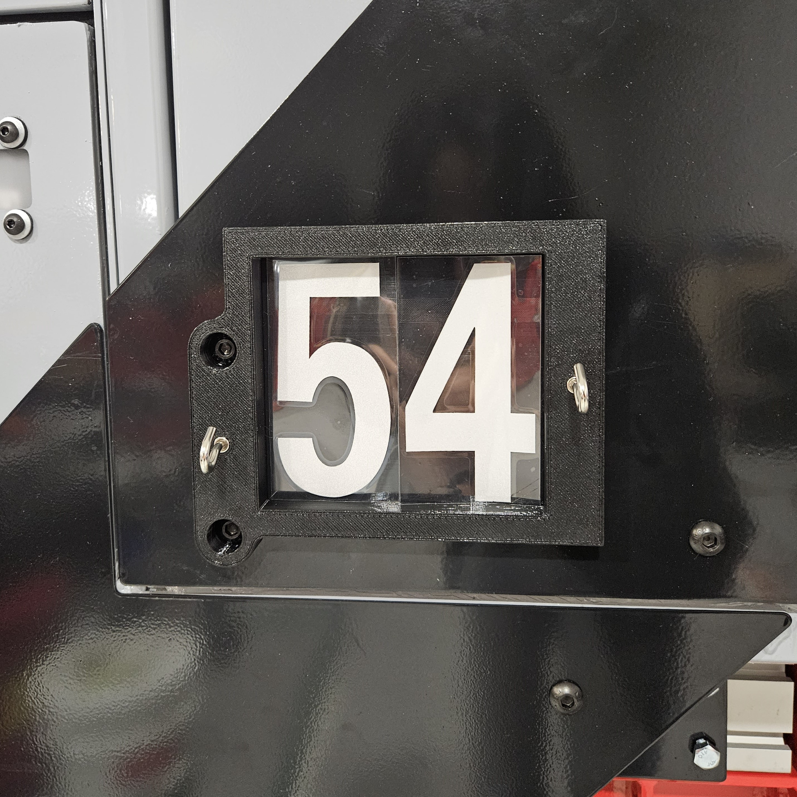

Battery Box Enclosure



What?
3 sticker applicator jigs used to optimize alignment and precision for serial number application processes on robotic fleet at Swap Robotics.
How?Designed in SOLIDWORKS, using magnets to attach jig to surface of robots and ustilizing existing bolts/surface features as alignment points. Used vernier calipers with precison to ensure accurate pin locations and 3D printed jigs.
Skills Applied